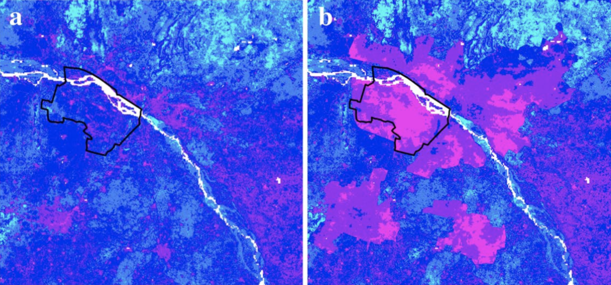
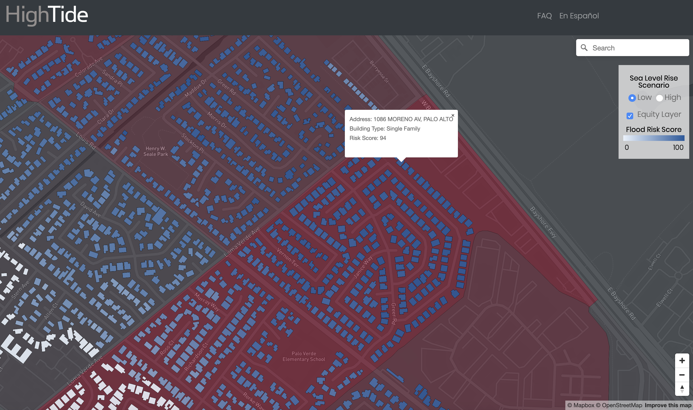
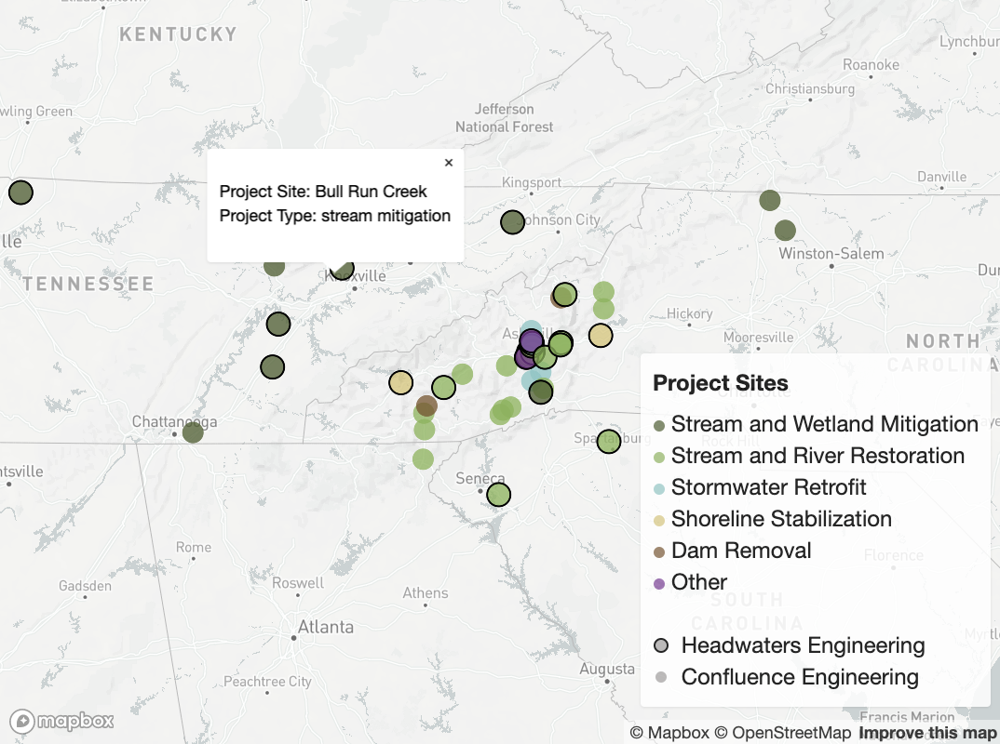
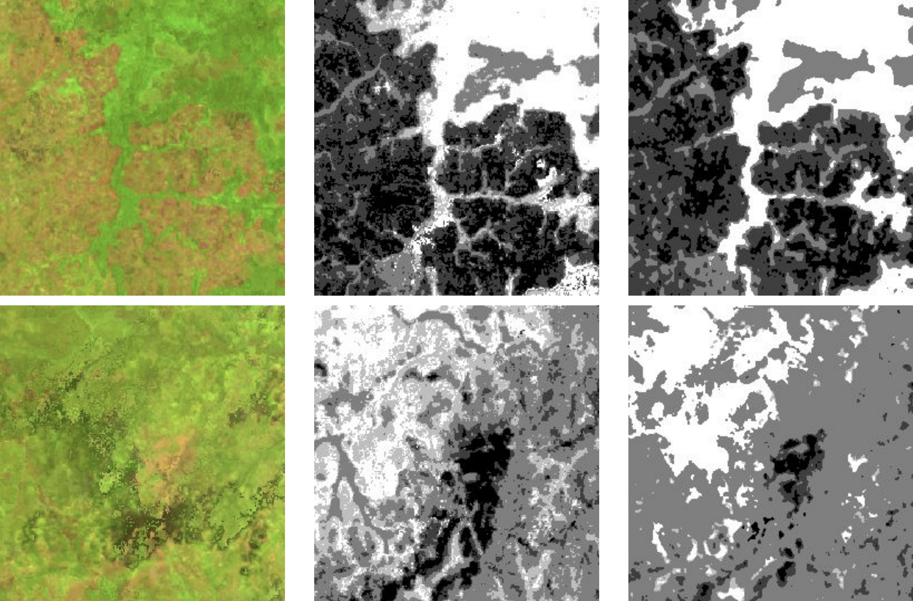

<!DOCTYPE html>
<html lang="en-US">

<head>
	<title>Avery</title>
	<meta name="viewport" content="width=device-width, initial-scale=1.0">
	<meta name="description" content="Avery's Portfolio">
	<link rel="shortcut icon" href="/AveryBickLogo.jpg" id="favicon">
	<link href="./css/style.css" rel="stylesheet" type="text/css"/>
	<link rel="stylesheet" href="https://fonts.googleapis.com/css?family=Didact+Gothic">
	<link rel="icon" href="./img/AveryBickLogo.jpg">

	<style type="text/css">
	a:link {color:#7dc9f4;}    /* normal link */
	a:visited {color:#7dc9f4;} /* visited link */
	a:hover {color:#50afe5;}   /* mouse over link */
	a:active {color:#fe0000}   /* selected link */
	</style>

</head>

</html>

<body>
	<div class="large-column">
	<h1>Environmental</h1>

<hr>
	<h2 id="publications">Publications</h2>
<hr>
	<i><h3>Rising seas, rising inequity? Communities at risk in the San Francisco Bay Area </h3></i>

<p class="center">(Lead Author, Publication in Submission)</p>

<br>
<p>This paper is the culmination of three years of research through Stanford's <a href="https://bay.stanford.edu/" target="_blank" rel="noopener noreferrer">Future Bay Initiative</a> and <a href="https://sigma.stanford.edu/" target="_blank" rel="noopener noreferrer">SIGMA Lab</a>. During my two years as a teaching assistant within the Future Bay program, I participated in collaborative research on sea level rise resilience in the San Francisco Bay Area with students, Stanford staff, local governments, and community groups. Community feedback indicated a need for quantitative research not only on risk of sea level rise to buildings, but also on cascading socioeconomic impacts. My coauthor Adrian F. Santiago Tate and I developed a risk framework we dubbed the Stanford Urban Risk Framework (SURF) based on the work done in the course. Given flood maps, building footprints, tax assessor parcels, and a number of federal government data sources, the SURF model estimates average annual losses from sea level rise across <a href="https://en.wikipedia.org/wiki/Representative_Concentration_Pathway" target="_blank" rel="noopener noreferrer">Representative Concentration Pathway Projections</a>. It also projects losses to household income across various income brackets. We apply <a href="https://en.wikipedia.org/wiki/Monte_Carlo_method" target="_blank" rel="noopener noreferrer">Monte Carlo</a> methods to quantify uncertainty in building damages and a <a href="https://en.wikipedia.org/wiki/Random_forest" target="_blank" rel="noopener noreferrer">Random Forest Classifier</a> to predict the number of floors in buildings. <i><a href="https://www.researchgate.net/publication/339198970_Rising_seas_rising_inequity_Communities_at_risk_in_the_San_Francisco_Bay_Area_and_implications_for_adaptation_policy" target="_blank" rel="noopener noreferrer">Full Pre-Print Text Here</a></i></p>

<br>
<br>
<hr>

<i><h3>When Floods Hit the Road: Resilience to Flood-Induced Commute Disruption in the San Francisco Bay Area and Beyond</h3></i>

<p class="center">(Supporting Author, Publication in Submission)</p>

<br>

<p>This paper also originated from the Stanford Future Bay Program. It investigates how increasing sea levels and coastal flooding could impact commute times in the San Francisco Bay Area, as well as which regions are particularly vulnerable. I assisted the lead authors by developing an ArcPy code to correct road network shapefiles and also by identifying areas of false positives for flooding, such as bridges.</p>

<br>
<br>
<hr>

<i><h3>Applying fuzzy logic to open data for sustainable development decision-making: a case study of the planned city Amaravati</h3></i>

<p class="center">(Lead Author, Published in <i>Natural Hazards</i>)</p>

<br>

<p>Abstract:</p>
<br>
<p>The Indian State of Andhra Pradesh is in the process of designing and constructing a planned capital city on the southern banks of the Krishna River at Amaravati. This region will see a significant increase in urban land cover and impervious surface area (ISA) under the 2050 draft perspective plan from the Andhra Pradesh Capital Region Development Authority. As the city central zone sits on the former floodplain of the Krishna River and is subject to concentrated rainfall during monsoon seasons—this increase in ISA risks increasing flood risk through preventing infiltration of storm water and causing increased peak storm water flow. The State has announced plans for a “zero-flooding city” through implementation of technologies including green roofs, porous pavement, and detention ponds. This study aims to facilitate these efforts through mapping of present and future land usage, regional flood risk, and environmental services utilizing open-source data in order to maximize efficiency of installed green infrastructure and minimize future flood damages. A map of relative soil infiltration capacity was created through fuzzy overlay of sand percentage, clay percentage, and bulk density at several depths. Relative flood risk maps for both present-day land cover and a 2050 scenario were developed using several factors: elevation, flow accumulation, surface runoff, and soil properties. A novel Relative Environmental Services Provided Index is proposed here to in order to encourage cost-effective and ecologically sound development through composite visualization of carbon storage, greenery, runoff coefficients, and soil flood prevention. <i><a href="https://www.researchgate.net/publication/322708213_Applying_fuzzy_logic_to_open_data_for_sustainable_development_decision-making_a_case_study_of_the_planned_city_Amaravati" target="_blank" rel="noopener noreferrer">Full Text Here</a></i></p>
<br>
<br>

<br>
<p class="center">Figures 7a & 7b - Relative flood risk in the Amaravati capital region in 2016 (left) and projected for 2050 (right). Pink and blue represent high and low relative risk, respectively.</p>

<hr>

<h2 id="Other Work">Other Projects</h2>

<hr>

<i><h3>HighTide Resilience Sea Level Rise Risk Platform</i></h3>
<br>

<p> My startup <a href="https://hightide.ai/" target="_blank" rel="noopener noreferrer">HighTide</a> has released a <a href="https://hightide.ai/resilience" target="_blank" rel="noopener noreferrer">prototype sea level rise risk platform</a>. This platform builds off of the SURF model developed through Stanford Future Bay Initiative and shows a relative flood risk score, in addition to projected impacts on household income across various income brackets at the Census block group scale. Our initial analysis shows Santa Clara County, California between 2020 and 2080. We plan to expand our analysis: first to all counties in the San Francisco Bay Area, then to the full coastal United States.</p>

<br>
<br>


<p class="center">Screenshot of HighTide Resilience sea level rise risk platform.</p>

<br>
<br>
<hr>

<i><h3>Headwaters Engineering Project Web Map</i></h3>
<br>
<p>Created an <a href="http://headwaters-eng.com/2019/11/22/headwaters-project-map/" target="_blank" rel="noopener noreferrer">interactive web map</a> for my uncle's ecological engineering firm Headwaters Engineering in Asheville, NC. The map shows different project types and also project details when clicking on a site. Created using the <a href="https://docs.mapbox.com/mapbox-gl-js/overview/" target="_blank" rel="noopener noreferrer">Mapbox GL JS Javascript library</a>, HTML, and CSS.</p>

<br>
<br>


<p class="center">Screnshot of Headwaters Engineering Web Map.</p>

<br>
<br>
<hr>

<i><h3>Deep Learning and Forest Boundary Mapping</i></h3>
<br>
<p> As part of the Stanford Course CS230 Deep Learning, my project team developed a land cover classifier that tracks deforestation using a convolutional neural network. We tested a binary (forest/no forest) classifier on manually-classified Rapideye imagery and received a 96% pixel accuracy. With a multi-class forest density classifier on LANDSAT data, we reached a 72% pixel accuracy. With further refinement, such a model could be used for automatic analyses of land cover change using frequently updated satellite imagery. <i><a href="./img/Final-Poster.pdf" target="_blank" rel="noopener noreferrer">View our Poster</a></i></p>
<br>
<br>


<br>
<p class="center">Multi-class forest density classification (left to right: image, label, classification).</p>

<br>
<br>
<hr>

<i><h3>Designing the Next Generation of Denitrifying Bioreactors</i></h3>
<br>
<p>During the Virginia Tech StREAM REU program in Summer 2013 my project team designed an experiment to measure the effectiveness of dentrifying bioreactors in removing nitrate and phosphate pollution from groundwater. We built four upflow bioreactors with varying concentrations of woodchips, biochar, and pond sediment. The reactors removed around 90% of nitrate and 75% of phosphates, those inoculated with pond sediment were especially effective and more quickly reached nitrate removal equillibrium. <i><a href="./img/DNBR_Poster.pdf" target="_blank" rel="noopener noreferrer">View our Poster</a></i></p>

<br>
<br>
<hr>

<i><h3>Heavy Metal Phytoremediation Potential of Macroalgae</i></h3>
<br>
<p>After recieving funding through an undergraduate research grant at SUNY Buffalo, I designed a heavy metal phytoremediation experiment with my PI, collected sediment samples from the Buffalo River, and built ten <i>Chara australis</i> growth tanks with varying cadmium concentrations and harvesting regimens. I performed acid digestions to quantify the uptake of cadmium and found bioconcentration factors up to 14.0, indicating that <i>Chara australis</i> is a viable candidate for cadmium remediation. <i><a href="./img/BioremediationPoster.pdf" target="_blank" rel="noopener noreferrer">View our Poster</a></i></p>


<div class="section bottom-menu"><hr/>
	<p>
		<a href="./index.html">home</a>
		<a href="./about.html">about</a>
		<a href="./environmental.html">environmental</a>
		<a href="./audiovisual.html">audiovisual</a>
	</p><
</div>

</body>